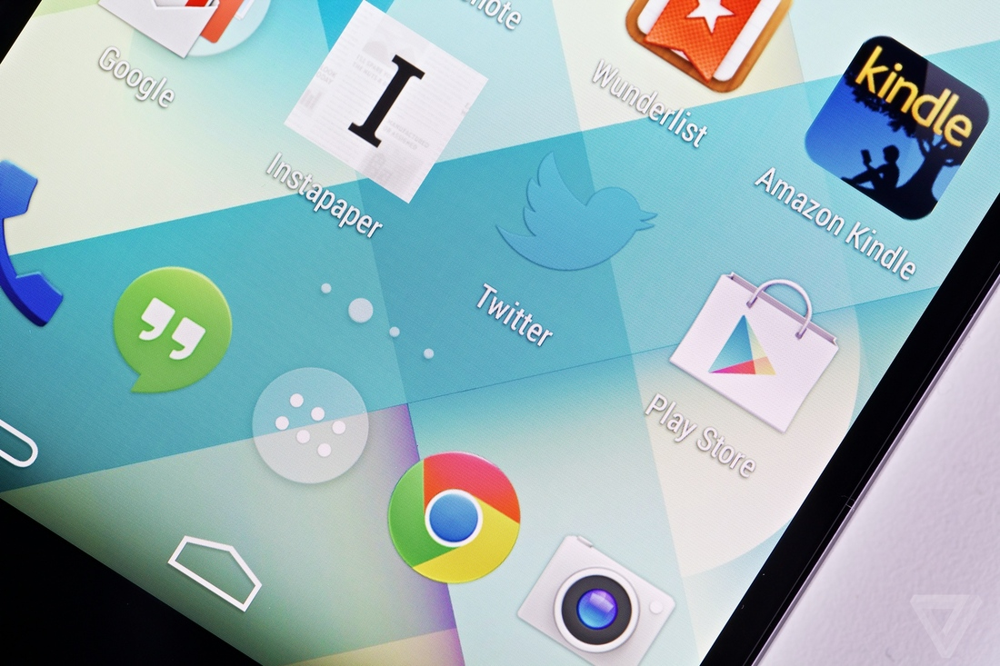

Nexus 5 Review
In this review of the Nexus 5, I will attempt to answer one simple question: is Google capable of making a flagship, best-in-class smartphone it can sell for $349 off-contract? And I don't just mean a nice, okay, swell, good, decent, better-than-the-last-one phone. I mean a phone that stacks up against the iPhone 5S, Galaxy S4, HTC One, or Lumia 1020. A phone that people want to buy. A phone that can win hearts and minds.
I'm asking this question because I believe Google is asking the same one. The Nexus line of phones may have just started as developer editions, or platforms for the latest version of Android, but unless Google's marketing department and PR team are reading from different sheet music, it seems like Google wants its Nexus phones to be the kind of consumer facing devices that its Nexus 7 tablet clearly is.
"IT'S PLAIN, BUT THAT DOESN'T HAVE TO BE BAD"
For all the focus put on a new Google phone, the Nexus 5 doesn't look like much. It's not a giant slab like the Galaxy Note 3, a sculpted piece of art like the Lumia 920, or a precious piece of "jewelry" like the iPhone 5S. It's an unassuming rectangle of a thing, available in black or white. At 5.42 inches tall and 2.7 inches wide, it's a big phone, and feels like a noticeable bump up from the Moto X or the iPhone. In some ways it’s a bit boring — especially next to the customizations offered by Motorola or the neon colors of the iPhone 5C. Plain isn't necessarily a problem — it can even be a strength, and I think it is here given what Google is trying to do. But still, the Nexus 5 is plain.
The phone is shaped to feel smaller than it looks, with subtly curved edges and slightly sharpened corners that nestle perfectly into the palm of your hand. It's surprisingly light, at only 130 grams and 8.6 millimeters thick. It's made completely of plastic, and obviously doesn't feel as high-end as metal phones like the HTC One or iPhone 5S — but it’s solid, not slippery. I found myself running my fingers along the carved Nexus logo on the back, and feeling the edges of the ceramic buttons — it’s just nice to hold. Stylistically, it shares much in common with the new Nexus 7 and the original Chromebook, and that’s a good thing.
The phone's a spiritual successor to LG's G2, but it's been improved in almost every way. The buttons are thankfully on the sides of the device, though the power control can sometimes feel like a stretch along the upper right corner of the phone. Two speaker grilles flank the recessed Micro USB port, but only one is an actual speaker; the other hides the Nexus 5's microphone. Left to fend for itself, the speaker is pretty quiet, and sometimes distorts at near-maximum volume.
It makes only two bold, eye-catching design statements. One is the large ring around the camera lens, which glints in the light and feels almost jarring next to the subtlety of the rest of the phone; it sort of looks like a spare part, attached at the last minute. Friends I discussed the feature with either hated it or loved it; I kind of like it. On the white version of the phone, the earpiece grille is colored white, which is striking against the black, glass face of the phone — it’s like a beacon. Speaking of beacons, Google has once again produced another device with a multicolored LED light embedded at the bottom of the screen, but I couldn’t tell you why that is. The light only flashes white when you have a notification, meaning it’s always flashing, so it’s always meaningless. I use an app called LightFlow, which allows you to set different colored notifications for specific apps, and it makes the LED about a million times more useful. Unfortunately, I’ve grown to love the Moto X’s Active Notifications, and the LED still makes a poor substitute. But I digress.
"THE NEXUS 5 IS MOSTLY JUST SUPPOSED TO GET OUT OF THE WAY"
Elsewhere in KitKat, there’s a new unified file picker, letting you attach files from Dropbox, Drive, Box, and more all in the same place, and (finally) a unified way to print from your phone. The widget drawer has been axed and combined with a contextual menu where you can also select wallpaper and open general Google settings — all of which are improvements. That means your main phone navigation is split between home screen, app drawer, and notifications — which are increasingly robust. In all, Android is tighter, simpler, and more unified everywhere; the general UI hasn’t changed dramatically, but the visual tweaks and functional additions continue Android down a very smart path.
THE CAMERA IS KIND OF CRAP
If there's a major shift in the software beyond interface cleanup and additional under-the-hood improvements, it might be the new version of Hangouts. The messaging app now fully integrates SMS and MMS, and replaces the "Messages" app from previous versions of the software. You can now send texts, instant messages, voice calls, and video calls all from the same place, giving it a feel much more akin to iMessage. It's a fantastic idea on paper, but a really clunky execution in KitKat. If you’re talking to someone via Hangouts, and then you text them via SMS, it starts an entirely new, separate conversation. Unlike iMessage, which combines everything into one stream whether you’re using SMS or not, Hangouts bifurcates those conversations, making communication actually more confusing and harder to navigate. Coupled with the fact that Google still doesn’t group separate accounts together in its apps, things are downright puzzling at times when trying to carry on a conversation. How can this be so hard? webOS got account linking and merged conversations right in 2009.
